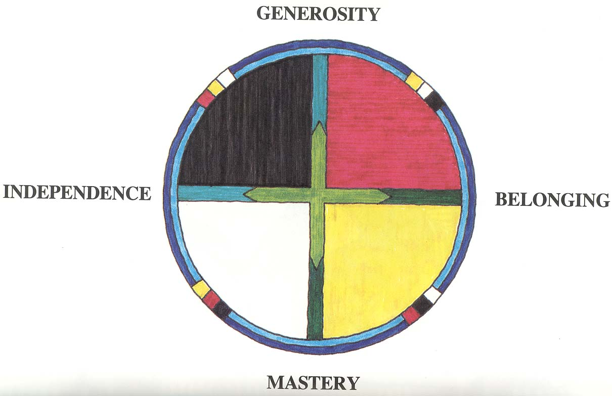

Mentoring
Mentoring is a key part of working with young people and my experience began with the three-day RAP course at Block Course Two in Auckland. The Response Ability Pathways course is a training program that provides skills for working effectively with all youth and supporting them on pathways toward responsibility. The training was very practical and it built a framework for positive connections amongst youth. It was based around the circle of courage, which identified four areas that need to be strong for a young person to be "normal". RAP encourages us to use a strengths-based approach, which means looking at the areas that are strongest and developing those to help with the areas that are not.

Choosing the Mentee
I had two mentees during the year, one of whom I approached and asked, the other was referred to me by a teacher within Fairfield School.
These two young people were entirely different; one was 18 years old and dealing with having Asberger's syndrome whilst the other was just seen as a trouble-maker within the school.I applied the strengths-based approach to my mentoring and actively sought out the things in these young peoples' lives that were going well. This made it easier to connect and discuss things. I used these two mentees to complete my Praxis requirements as was expressed in the aims of the meetings but also managed to form genuine relationships.
Reflections and Learnings
I wonder whether being transparent about the course requirement aspect of the relationship was detrimental. One of my mentees said that when I mentioned that part of the relationship it made it sound like I was just "ticking the boxes" with him.
I learnt not to be pushy and that sometimes the issues that were raised in the meetings were quite different to what I might have planned to talk about. It was an enjoyable aspect of my course this year because it meant I got to actually talk about things with young people that mattered. I learnt that some days the young person would not want to talk about anything and that this is ok as well. I would often have an unstructured activity, like basketball, as a backup to the sessions. This often made it easier to discuss things on the days the young person was not interested in other activities or things I might have planned.